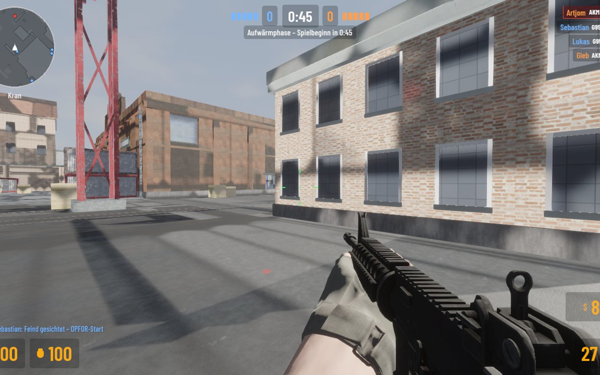
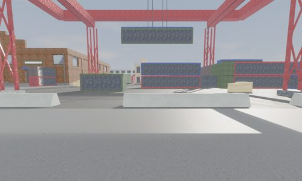
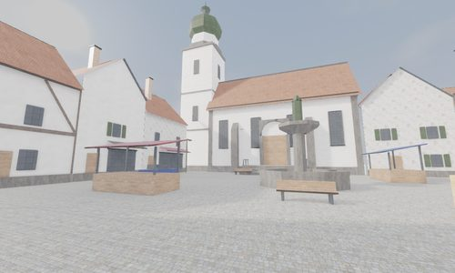
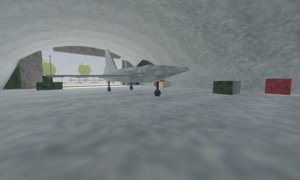

PLANT. HOLD. DEFUSE.
Buy your loadout and commit to a site. Play the clock, hold an angle, or risk the retake. Every purchase shapes the next round.
BOMB DEFUSAL
INDEPENDENT TACTICAL SHOOTER / 001
Read the map. Trust your squad. Make your move.
A standalone shooter where the next round is yours to take.
EARLY DEVELOPMENT · DESKTOP · BUILT WITH BEVY
A well-timed flash. A quiet rotation. One last defuse.
ZUGRIFF brings round-based firefights, a weapon economy, and squad play into a game you can run on your own terms.
Buy your loadout and commit to a site. Play the clock, hold an angle, or risk the retake. Every purchase shapes the next round.
BOMB DEFUSALPush through contested ground, reach the hostages, and escort them to safety. Work with your team to make a route home.
HOSTAGE RESCUEGet straight into the fight. Learn the weapons, explore the angles, and sharpen your aim in deathmatch.
DEATHMATCHFrom harbor warehouses to old-town streets.
Three distinct settings. A new way in, every time.

Warehouses. Cargo. Contested sightlines.

Town squares. Tight streets. Close calls.

Hangars. Open ground. Watch your flank.
Get the game. Bring a plan.
Early development. German in-game interface.
Game assets and dedicated server included.
Private preview. Sign in to GitHub with repository access to view downloads.
64-bit PC · Portable ZIP
VIEW RELEASES Extract the archive. Open zugriff.exe.x86_64 · tar.gz archive
VIEW RELEASES Extract, then run ./zugriff. Vulkan driver required.Apple silicon · Disk image
VIEW RELEASES Copy to Applications. Build is not notarized.Yes. Start a local match from the game menu. Bots play both sides, with four difficulty levels and radio orders. You only need a network connection for multiplayer.
Run the included zugriff-server, then add its address in the multiplayer menu. Create a room and share its code. For connections over the internet, the host must make TCP port 27015 reachable. Setup instructions are in the README.
ZUGRIFF is an independent game in early development. Expect rough edges and changes between releases. The interface is currently German. Use the GitHub issue tracker to report problems.
Find the code, build instructions, credits, and release history in the ZUGRIFF repository.